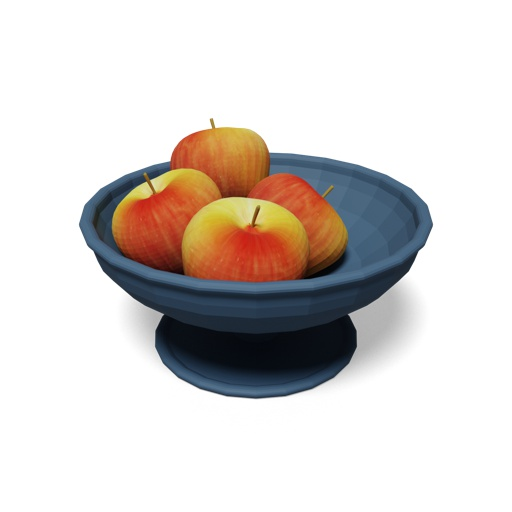
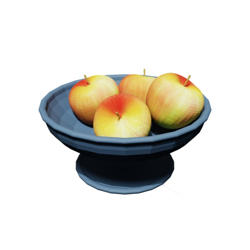
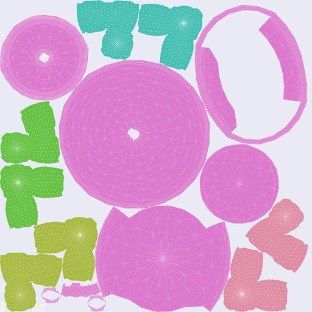
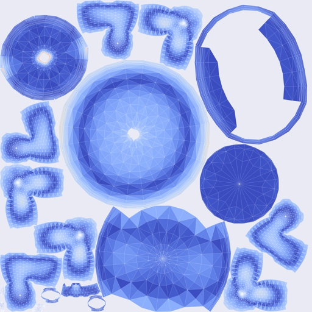
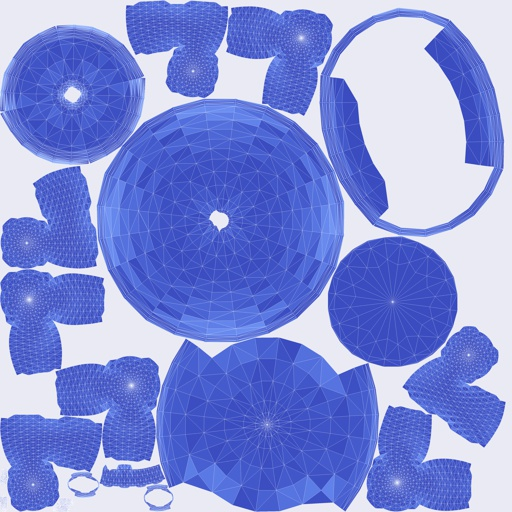
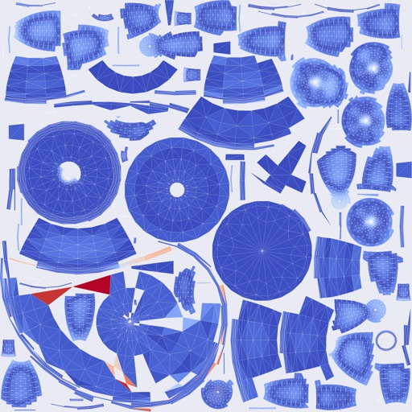
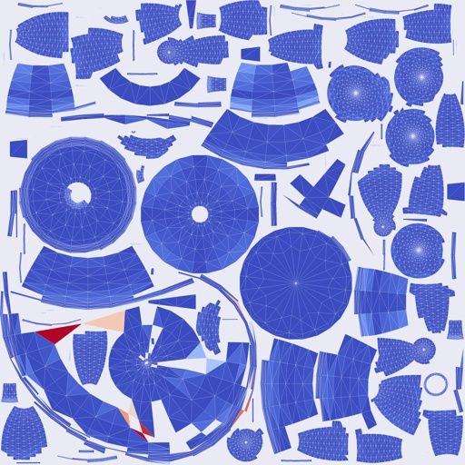
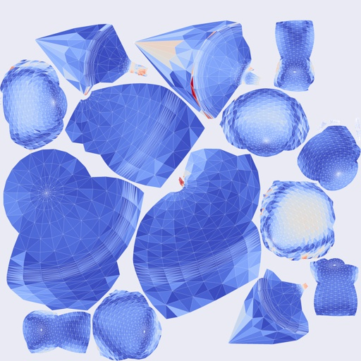
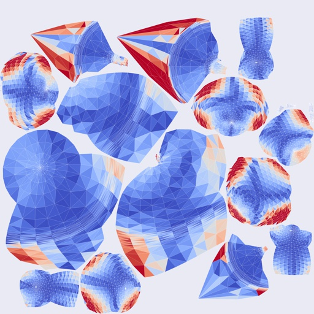

0c3ca2b32545416f8f1e6f0e87def1a6 -- Objaverse
Input Mesh
View 1
View 2

View 3
Ours
Time ↓: 6.322 s
Number of Charts ↓: 20
Seam Length ↓: 15.006
Area Distortion ↓: 1.245
Overall Area Distortion ↓: 1.138
Angular Distortion ↑: 0.981
Part Assignment
2D Part Map
Per-face Area Distortion
Per-face Angular Distortion
xatlas
Time ↓: 1.484 s
Number of Charts ↓: 106
Seam Length ↓: 34.107
Area Distortion ↓: 1.193
Overall Area Distortion ↓: 1.118
Angular Distortion ↑: 0.987
Per-face Area Distortion
Per-face Angular Distortion
Open3d
Time ↓: 12.058 s
Number of Charts ↓: 22
Seam Length ↓: 11.845
Area Distortion ↓: 1.384
Overall Area Distortion ↓: 1.143
Angular Distortion ↑: 0.834
Per-face Area Distortion
Per-face Angular Distortion
Blender
Time ↓: 0.033 s
Number of Charts ↓: 183
Seam Length ↓: 31.811
Area Distortion ↓: 1.23
Overall Area Distortion ↓: 1.115
Angular Distortion ↑: 0.893